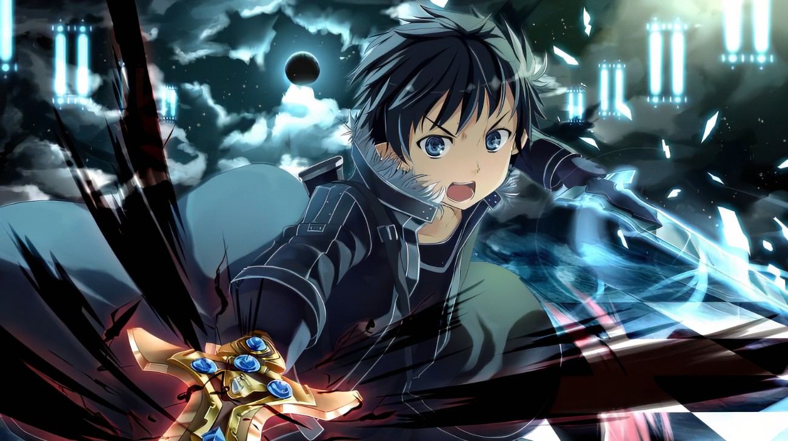

| 桐谷和人于2022年11月6日进入SAO， [20]当天游戏公测4小时后发现退出界面消失，以为是系统bug，后被系统强制传送到中央广场，了解了SAO的原本玩法，开始憎恨茅场晶彦，产生了不输给游戏的想法，开始独自一人攻略。 [20-21]一月之后召开SAO第一层BOSS攻略会议，并且遇到亚丝娜与其临时性组队，在成功攻略第一层后拥有了封弊者的称号。因全身素黑的衣饰造型被称为“黑色剑士”。 [21]
2023年3月，桐人救了月夜黑猫团并加入其中，认识了幸、启太等人。 [22]后因为去不知名迷宫区赚钱除桐人外全部死亡，会长启太在SAO外层跳楼自尽。月夜黑猫团事件成为桐人的心痛。 [22]
后在40层暗夜森林地区救出西莉卡， [23]并且帮西莉卡复活毕娜，也完成了逮捕罗莎莉雅的委托。 [23]在59层攻略会议中与血盟骑士团副团长亚丝娜产生分歧进行决斗并胜利。后与亚丝娜处理了圈外事件。 [24-25]
后桐人经亚丝娜推荐在莉兹贝特武器店购买武器时破坏店内武器。不得已和莉兹贝特去55层雪山地区寻找能打造武器的稀有金属，经过波折后成功打造出白剑·逐暗者。 [26]
在森林中偶然发现稀有食材杂烩兔的肉，后被邀请至亚丝娜家中分享，并和亚丝娜再次组队。和亚丝娜、克莱因等人一同击败了74层BOSS，但使用了专属技能“二刀流”而被称为是和血盟骑士团团长希兹克利夫双强的存在。在与团长的决斗中落败而被迫加入血盟骑士团， [27]在组队外出攻略时被克拉帝尔麻痹暗算，在千钧一发之际亚丝娜赶来救了其一命。后跟亚丝娜暂时退团，在22层地区买了一间小木屋，并且在系统上结婚。 [27]
在22层的森林中，遇到了人工智能的女孩结衣（结衣丧失了记忆）， [28]后桐人和亚丝娜认其做了女儿。 [9]为找回结衣的记忆回到起始城镇，帮助由莉耶尔救出其恋人，结衣恢复了记忆， [29]但由于强行消除了系统NPC而将被系统消除。在结衣消失之际桐人利用操控台拦截下了结衣本体，并且存储在自己电脑中。 [29]
后在第75层的头目攻略战结束后对血值一直处于绿色状态而怀疑希兹克利夫的身份， [30]最终识破了希兹克利夫的真实身份是茅场晶彦。 [10]在除了二人以外场内所有人皆处于麻痹状态与其进行双方设定为超低血量的对决，成功则为游戏通关的效果，失败即为死去。
在即将死去时，亚丝娜打破麻痹效果，替桐人挡了一次攻击， [10]但是桐人也因此而失去了信心，在遭到希兹克利夫的攻击以后，却在消失的瞬间超越系统限制，在已被判定死亡的情况下再次发出对希兹克利夫的攻击。 [10]最终二人同归于尽，桐人和亚丝娜因为成功攻略游戏而获得不死之奖励，成为SAO幸存者。 |